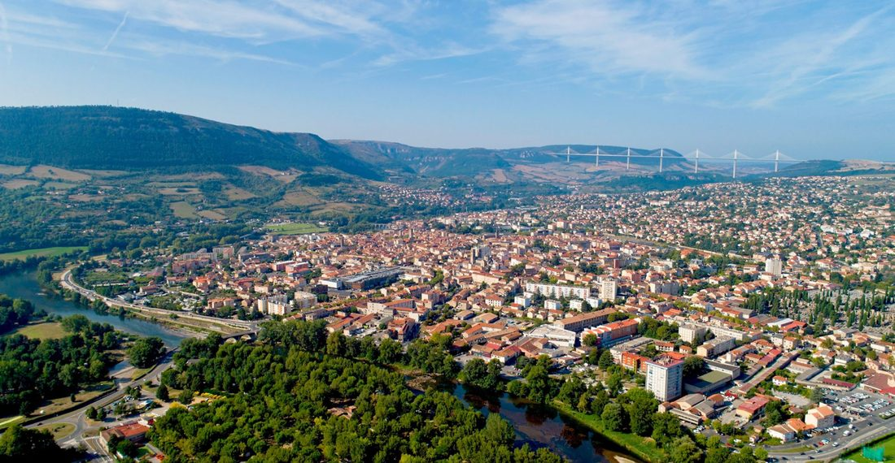
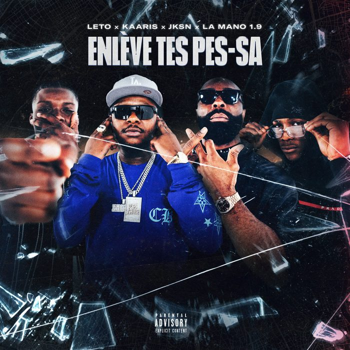
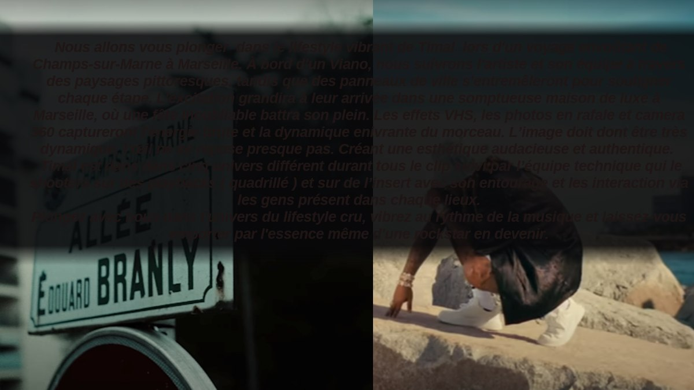
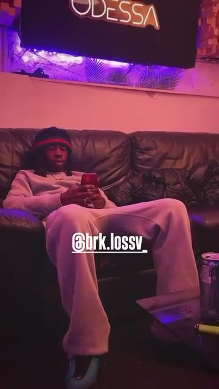
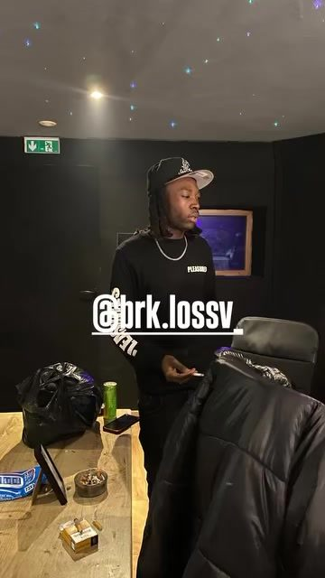
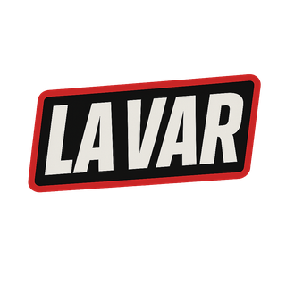
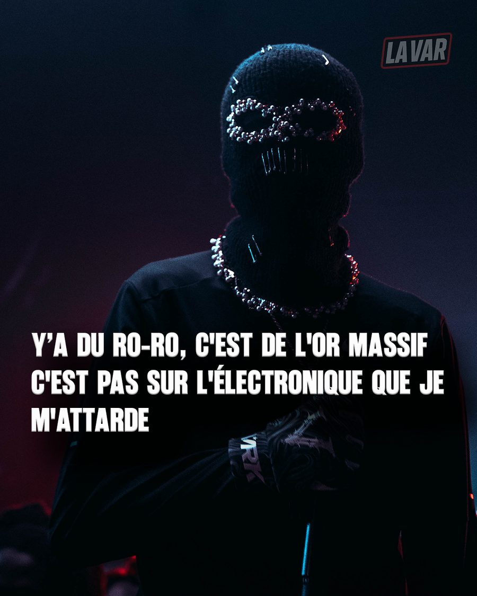
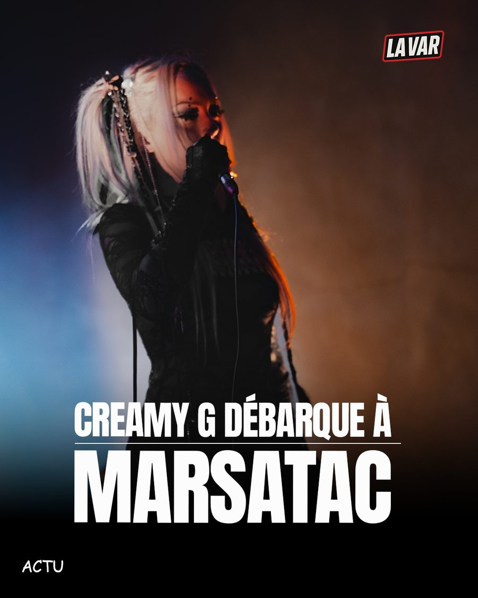

Du studio au développement d'artistes, j'ai appris à comprendre un talent, construire son environnement créatif et faire avancer un projet jusqu'à sa sortie.
Candidature Talent Manager
A&R Studios, Universal Music France
Dès la seconde, au lycée : premières sessions de production, notamment avec Bolemvn. En 2021, un studio cofondé avec l'artiste ZS, au cœur du Bois-l'Abbé, à deux pas des Mordacs.
Sont passés par ce studio : L2B, Rsko, BRK, Didi Trix, Kerchak, ZS

Millau, Aveyron, ville nataleLa rencontre avec Nocolor change tout.
"Noir", L2B
Acteur principal
Leto, "Enlève tes Pessas"
Photographie / DA image · Synopsis, écrit pour NocolorV2V, "Crapuleux"
Co-réalisation
02Timal, "760"
Synopsis / moodboardCette période m'a surtout appris à lire un projet : comprendre ce qu'un artiste veut dire avant de décider comment le montrer.
"Maybach" de Landy feat. Gazo · "Afro Trap Part. 11" de MHD · Dexter HMC ft. La Hasba, "91022"
Sur les tournages Nocolor : coordination avec les boîtes de location, les cadreurs et les monteurs.
Montage et cadrage d'interviews, contenus éditoriaux, intros et habillages, au studio.
Photographe accrédité pour Générations, au festival FCNY, sur l'apparition de La Mano.
BRK avait déjà son identité. Mais son environnement créatif commençait à se répéter : même réalisateur, mêmes décors de tournage, des visuels qui se ressemblaient, certaines sonorités qui revenaient. Un risque de saturation dans un flux de sorties de plus en plus dense.
Saturation visuelle et sonore, dans un contexte où les artistes multiplient les sorties et les contenus.
Faire évoluer l'environnement créatif sans dénaturer l'identité de l'artiste.
Plutôt que de modifier l'identité de BRK, renouveler son environnement créatif.
Diversification des réalisateurs, des équipes, des références visuelles et des beatmakers. Pour "Flex", Sponge, puis Neweyes Production sur les deux réalisations suivantes.
Beatmakers ABL (Sexy Nana) et Achille GX (Covid-19, Mouss et Alonzo).


J'ai appris à comprendre un artiste en travaillant avec eux, pas seulement en travaillant pour eux.
Au fil de mes projets, j'ai appris à identifier les profils capables d'apporter quelque chose de différent à un artiste, et à créer les bonnes connexions autour d'un projet.
Je viens de l'exécution. Mon évolution m'a progressivement amené vers la compréhension, la stratégie et le développement des talents.

La Var1 anMédia rap et culture urbaine. Veille éditoriale, sourcing d'artistes, prospection.
Artistes mis en avant : Rvfleuze, LMT, KLM, Darlingchouchou, Shippeur, Supremenova, Eliah ZS


Je prospecte les artistes, leurs équipes et les partenaires éditoriaux, puis je construis les échanges jusqu'à leur mise en avant sur La Var.
La Var m'a appris à observer quotidiennement ce qui bouge dans le rap : artistes émergents, formats, communautés, esthétique, plateformes et nouveaux usages.
Comment les artistes créent du lien entre deux sorties.
Comment faire évoluer une identité sans la rendre incohérente.
Comment adapter une idée aux différents formats et usages.
Ce qui vient du rap, mais aussi du sport, de la mode, du lifestyle et de l'entertainment.
Aujourd'hui, un artiste peut construire une communauté autour de bien plus que ses sorties musicales. Le sport, le mindset, la discipline, la mode ou le lifestyle peuvent devenir des extensions de son territoire artistique.
Ce qui m'attire chez A&R Studios n'est pas uniquement l'échelle d'Universal. C'est la possibilité de travailler à l'intersection de plusieurs mondes : artistes, labels, marques, création, image, contenu et innovation.
Mon parcours s'est construit exactement à cette intersection, mais à une échelle indépendante.
Je possède déjà certains réflexes du métier grâce au terrain, mais je veux maintenant les appliquer à une autre échelle.
Aujourd'hui, je veux comprendre comment cette logique fonctionne à une autre échelle.
Anglais professionnel · Pack Office, Photoshop, Lightroom, Premiere Pro, After Effects